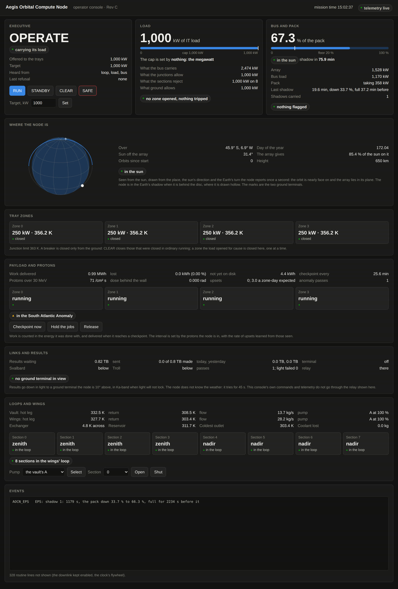

The Aegis Orbital Compute Node (AOCN) is a free-flying unit of one megawatt of commercial accelerator load in an unpressurised shielded vault, powered by a fixed 7,630 m² solar sheet and cooled by 2,035 m² of pumped-loop radiator, in a 650 km dawn-dusk sun-synchronous orbit. The orbit is sunlit all the way round for 276 days a year and has a shadow of up to 19.6 minutes an orbit for the other 89; a 1,182 kWh battery carries the full load through it, so the node runs continuously. The node is sized for batch work: model training, large-scale inference, simulation, and processing of data already in orbit. It is not a cloud region.
Rev C is a correction and its consequences. Rev B stated that this orbit has no eclipse season; it has one (Section 3). Throttling through the shadow, a higher orbit with no shadow, and a low-inclination orbit were each priced, and the battery was taken. The array grows from 5,400 to 7,630 m², node mass from ~65 to ~86 t with 20 % growth, and the launch price at which the node reaches parity with a terrestrial hall falls from about $300 to about $230 per kilogram to sun-synchronous orbit. The coolant is chosen: two loops, glycol-water on the trays and silicone oil in the wings (Section 5). The radiation environment is now taken from a trapped-proton model. The Rev B thermal sizing, vault, data path and tray refresh stand. Parity remains a launch-price gate; the node itself is buildable with current spaceflight technology.
| Parameter | Value |
|---|---|
| Orbit | 650 km circular, sun-synchronous, ~98° inclination, dawn-dusk local time of ascending node |
| Period | 97.6 min |
| Sun angle to orbit normal | ≤ 31.4° through the year: the 23.4° tilt of the Earth's axis and the 8° by which the orbit normal lies off the equator at 98° inclination |
| Shadow | Begins when the sun is more than 24.8° off the normal. 89 days a year, centred on the June solstice for an 18:00 ascending node and on December for 06:00; up to 19.6 min an orbit (20 %). None for the other 276 days |
| Energy storage | 1,182 kWh; full load through the shadow (Section 6) |
| Array pointing | Fixed sheet in the orbit plane, facing the sun; no gimbal |
| Radiator pointing | Wings in the plane containing the sun vector and nadir; faces look along ±velocity, never at the sun, obliquely at Earth; shaded by the array |
| Drag makeup | ~2,000 m² ram area plus the array's shear; ~4 m/s and ~17 kg xenon per year in ordinary air, ~18 m/s and ~87 kg at an active sun; a 250 m raise every two weeks on one of two 0.3 N thrusters, fired in the sun on a full pack |
| End of life | Open. Drag brings a dead node down in ~11 years (2 at an active sun), but 86 t does not all burn and the thrusters cannot steer it below ~400 km. A controlled end adds 1.5 t (the vault alone, the sheet and wings released to burn) to 7 t (the whole node from 650 km). A vault that docks itself (Section 7) is steered down from 650 km at every refresh, the last included |
| Ground contact | Both poles every orbit; above 10°, ~87 min per day with one high-latitude terminal, ~160 min with one near each pole |
| Radiation | Behind the vault wall, trapped protons from the South Atlantic Anomaly, ~150 rad per year; the electrons of the auroral horns stop in the wall (Section 7) |
Rev B gave the sun angle as ≤ 23.4° and the orbit as eclipse-free above ~620 km. That counted the axial tilt and omitted the 8° of the orbit normal. No dawn-dusk orbit below about 1,400 km is free of shadow, because the sun-synchronous inclination rises with altitude.
| Option | What it takes | Verdict |
|---|---|---|
| Throttle in the shadow | No added hardware. 95 % of a megawatt-year delivered at end of life; array 10 % short on the worst 90 days; radiator wings cycle ~50 K every orbit of the season | Not taken. The node is a megawatt |
| ~1,600 km dawn-dusk, 102.5°, no shadow | 6,400 m² array; ~76 t launched including 5.6 t of xenon for the climb from 650 km and for disposal | Not taken. Inner proton belt: ~5,400 rad per year behind the same wall, 37 times the 650 km figure; half of each orbit in protons above 30 MeV; no natural decay |
| 650 km, 28.5°, battery | 35 min eclipse every orbit: 2,124 kWh battery, 7,777 m² gimballed array, 2,512 m² unshaded radiators, ~100 t | Not taken. On a common launch footing its parity price is about 12 % better, inside the uncertainty; it takes twice the proton dose and its array, battery and wings all move or cycle every orbit |
| 650 km dawn-dusk, battery | 1,182 kWh battery, 7,630 m² fixed array, ~86 t | Rev C baseline |
Rev B set out to delete the battery because everything downstream is simpler without one. The array is still fixed, the sun constant and the radiators shaded. For 276 days nothing cycles; for 89 the battery does, and because it carries the full load nothing else does.
| Leg | Method | Capacity | Note |
|---|---|---|---|
| Dataset up | Launched solid-state storage installed with each tray refresh | 10 PB ≈ 164 × 61 TB drives, < 0.5 t | Cheaper and faster than any uplink |
| Results down | Optical to two polar ground terminals; Ka-band to say what is waiting | ~115 TB/day at 100 Gb/s over ~160 min above 10°, clear skies; about half with the skies clear half the time | One terminal: ~87 min, ~63 TB/day. Ka-band at 1 Gb/s: 1–3 TB/day, not a fallback for results |
| Tasking, telemetry | RF via relay, continuous | kb/s to Mb/s | Ground plans, node executes autonomously between contacts |
| Node to node | Optical crosslink within the plane | 10–100 Gb/s | Distributed training across nodes; not required for one node |
At steady state every watt of electrical input becomes heat. Commercial accelerators hold junction temperature below ~363 K; direct liquid cooling delivers coolant at 305–320 K and returns it 10–15 K warmer. The radiator runs between ~330 K inlet and ~305 K outlet: a 315 K mean radiating temperature. Rejection is two-sided at emissivity 0.88 with an effective factor of 0.6 covering Earth infrared on the oblique face, inter-wing view factor, coating degradation, and fin efficiency. With the wings shaded by the array and no direct solar load, the factor is conservative.
| Mean radiating temperature | Two-sided, theoretical | Effective (× 0.6) | Area per MW rejected |
|---|---|---|---|
| 300 K | 808 W/m² | 485 W/m² | 2,060 m² |
| 310 K | 922 W/m² | 553 W/m² | 1,810 m² |
| 315 K, baseline | 983 W/m² | 590 W/m² | 1,700 m² |
| 320 K | 1,046 W/m² | 628 W/m² | 1,590 m² |
| 330 K | 1,183 W/m² | 710 W/m² | 1,410 m² |
| Parameter | Value |
|---|---|
| Heat rejected | 1.2 MW |
| Radiator area | ~2,000 m² two-sided for the load, 2,035 m² with the battery's losses; two 50 × 20 m wings, zenith and nadir of the truss |
| Loops | Two, single-phase, each with redundant pumps: 60 % propylene glycol-water in the vault, through the trays; silicone oil in the wings (freezes at 162 K), isolable sections per wing; a counterflow heat exchanger between, 5 K approach |
| Why two | Wings with no load settle near 205 K. Glycol-water alone freezes in them at 223 K within two hours; a cold-tolerant fluid alone, through cold plates made for glycol-water, does not carry the megawatt |
| What it costs | 5 K on the trays' coolant; ~1.9 t; ~19 kW of pumping against ~10 |
| Panel mass | 6 kg/m² deployable pumped-loop panel; ~12 t |
| Coatings | Atomic-oxygen tolerant; ram-facing wing faces |
| Growth path | Hotter-tolerant accelerator generations raise rejection per m² on the same wings |
| Case | Result |
|---|---|
| Margin | ~1,020 kW of accelerator with eight wing sections before the junction limit; ~930 kW with seven |
| Section punctured | Isolated in seconds with about a kilogram of oil lost; load held to what seven sections carry; the vault's loop is not touched |
| Coolant flow lost | Trays warm ~8 K per minute; junction limit in under a minute. Standby pump in seconds with no effect on the load; both pumps of either loop gone, the trays are off inside eight seconds |
| Load removed | The wing pumps slow to hold the vault at 300 K; the wings go to 200 K and stay there a day with nothing frozen, and take the megawatt straight back |
| Sun lost for a day | The vault held at 300 K on survival loads; two thirds of the battery left |
| The hazard | Cold oil pumped hard through the exchanger against a cold vault freezes its water side inside three hours. Holding the vault's temperature with the wing pumps prevents it |
From a time-stepping model of the trays, the loop and the wings by section (November 2026), calibrated to the sizing point above. Its tray heat capacity, overhead split, sink temperature, the vault shell's loss and a pump that turns at under a percent of its speed are first assumptions; the results are directions, not specifications.
| Step | Factor | Running value |
|---|---|---|
| Solar constant 1,361 W/m² × 29 % triple-junction GaAs | — | 395 W/m² |
| Blanket packing: cells, gaps, harness, hinges | 0.85 | 336 W/m² |
| Radiation degradation, 10 years polar | 0.85 | 285 W/m² |
| Operating temperature derate | 0.85 | 243 W/m² |
| Worst-season sun angle on a fixed array, cos 31.4° | 0.85 | 207 W/m² |
| Earth near aphelion in the same season | 0.97 | 200 W/m² end of life |
| Parameter | Value |
|---|---|
| Electrical demand, end of life | 1.2 MW (1.0 MW IT plus ~20 % pumps, conversion, comms, attitude control, propulsion) |
| Array output, end of life, worst day | 1.53 MW: 1.2 MW of load and 0.33 MW to refill the battery in the sunlit arc |
| Array area | 7,630 m², carried as a 109 × 70 m fixed sheet (Rev B: 5,400 m², which made 1.08 MW on its worst day) |
| Area per MW electrical, EOL | ~5,000 m² (Rev B: ~4,500 m²; Rev 1.1: ~2,500 m² at beginning of life, normal incidence) |
| Blanket mass | 2.5 kg/m²; ~19 t |
| Capacity factor | ~96 % lit, 100 % delivered, against 20–25 % for ground solar |
| Step | Basis | Value |
|---|---|---|
| Longest shadow | June solstice, 650 km | 19.6 min of 97.6 |
| Energy through it | 1.2 MW electrical | 393 kWh |
| Pack energy | 35 % depth of discharge, 95 % discharge efficiency | 1,182 kWh |
| Pack mass | 150 Wh/kg at pack level, × 1.15 for thermal control, structure and management | 9.1 t |
| Recharge | 92 % round trip, inside the 78 sunlit minutes | 329 kW of array |
| Duty | ~15 shadows a day for 89 days | ~1,300 cycles per year |
In the plant model at the June solstice at end of life the node holds 1.0 MW IT through the shadow, the pack falls to 67 % and is full before the next, and the loop temperatures do not move. At 60 % depth of discharge, arguable at a quarter of an every-orbit duty, the pack is ~690 kWh and ~5 t; 35 % is kept until a cell is chosen. The pack is also the safe mode: with the sun lost it carries survival loads for days against hours for Rev B's 50 kWh.
Rev 1.1 carried 15–50 t of water and structure as shielding: a crew figure applied to electronics. Silicon needs a tolerable total dose, a handled upset rate, and a refresh plan.
| Parameter | Value |
|---|---|
| Vault | Unpressurised cylinder ⌀4 × 10 m; trays, storage pool, power conversion and loop pumps inside |
| Hardware | Accelerators, memory, processors, network and storage are commercial parts, screened and proton-tested, not hardened. Flight computer, tray power switches, bus conversion, pump and valve controllers are space-grade |
| Wall | 10–15 mm aluminium-equivalent; stops the electrons of the polar horns, takes about a third off the trapped protons between 5 and 15 mm |
| Total dose environment | ~150 rad per year behind 12.5 mm at 650 km dawn-dusk, SAA protons (AP8, solar minimum; protons only; good to about a factor of two). 8 % of the orbit is spent in protons above 30 MeV |
| Planning limit | 2 krad per tray, where commercial memory can begin to misbehave; parts fail at 10–30 krad. Five years is ~0.75 krad |
| Tray life | 3–5 years, set by the commercial hardware cycle, not by dose |
| Upset handling | ECC memory, frequent checkpoint to local storage, scheduling that expects a few percent throughput lost to restarts on polar and SAA passes. Open question; not closed in Rev C. |
| Servicing | Cold-plated trays on rails, swappable by a robotic servicer without breaking the loop; EVA-compatible interfaces; array blankets and radiator wings line-replaceable |
| Refresh without a servicer | Traded, not decided. No vehicle flies that can swap a tray; a module of this mass docking itself has flown for decades. The vault as that module: trays, their loop and the heat exchanger in one, docked to the truss and taken down by itself at the end of its trays' life. Across the joint: four zones of 278 kW, mated with their breakers open, and the wings' silicone oil, 28 kg/s, in ten pairs of 38 mm couplings or one pair of 119 mm, neither flown at this size. ~21 t per refresh against 12 t for trays alone (25 and 14 with growth); 3.5 t on the node, parity $233 to $224/kg; no servicer. Docking compute modules to a hub is Starcloud's proposal of 2024; the size of the joint for a megawatt is what is added here |
| Vault structure and shielding mass | ~5 t |
| Group | Basis | Mass (t) |
|---|---|---|
| Solar array sheet | 7,630 m² at 2.5 kg/m² | 19.1 |
| Radiator wings and loop | 2,035 m² at 6 kg/m² | 12.4 |
| Second loop | Exchanger, second pump pair, the wings' fill of silicone oil | 1.9 |
| Battery | 1,182 kWh at 150 Wh/kg, × 1.15 | 9.1 |
| Compute trays and storage | 1 MW IT at ~12 kg/kW | 12.0 |
| Vault structure and shielding | ⌀4 × 10 m, 10–15 mm Al-eq, rails | 5.0 |
| Power conversion, distribution, pumps, fluid, avionics, comms | Allocation | 5.0 |
| Truss, mechanisms, attitude control, electric propulsion and propellant | Allocation | 7.0 |
| Subtotal | 71.5 | |
| Growth margin, 20 % | 14.3 | |
| Node mass | ~86 |
Rev 1.1 carried 40–80 t for 200–500 kW of accelerator. Rev B carried ~65 t for 1,000 kW with the water shield and batteries gone and compute at liquid-cooled rack density. Rev C adds 21 t: 9 t of battery, 6 t of array, 2 t for the second loop, and the growth margin on all three. A refresh relaunches only the ~12 t of trays and storage.
The array is a 109 × 70 m sheet in the orbit plane facing the sun. A truss runs anti-sunward from its centre; the vault sits 8–18 m behind the array, and two 50 × 20 m radiator wings extend from 20 to 70 m behind it, one zenith and one nadir of the truss, in the plane containing the sun vector and nadir. The array is edge-on to the velocity vector and shades the wings; the wings are edge-on to the sun and to the array. Truss lengths and the wing split are placeholders; areas are not. The battery is carried in the vault's shell. The arrangement drawing is published with the web page.
Both an orbital node and a terrestrial hall buy the same accelerators, on the order of $40–50 M per MW of current-generation hardware, and those dominate either bill. What differs is the plant around them. A terrestrial AI hall costs roughly $10–15 M per MW to build plus ~$0.6–0.9 M per MW-year in energy: about $15–20 M per MW of plant and power over a five-year hardware life, before the years spent in an interconnect queue. The orbital node replaces all of it with launch mass.
| Launch price to SSO | Launch cost per 86 t node | Against $15–20 M terrestrial plant + power |
|---|---|---|
| $3,000 /kg | $257 M | 13× worse |
| $1,500 /kg | $129 M | 6× worse |
| $500 /kg | $43 M | ~2× worse |
| $300 /kg | $26 M | a third worse |
| $230 /kg | $20 M | parity |
| $200 /kg | $17 M | better |
| $100 /kg | $9 M | 2× better |
Crossover near $230/kg (Rev B: $300/kg, for a node that could not hold its load 89 days a year), before on-orbit assembly, qualification and operations (which push it lower) and before the value of skipping a multi-year grid queue (which pushes it higher). Refresh at $500/kg relaunches ~12 t for ~$6 M against $40 M or more of hardware inside, so refresh does not decide the case; a vault that docks itself relaunches ~21 t for ~$10.5 M, and still does not. The gate is launch price, not technology.
Around the Moon or Mars there is no advantage until customers are there, and the Earth link is worse. The case changes only on the lunar polar surface.
| Site | Thermal environment | Verdict |
|---|---|---|
| Lunar equatorial surface, day | ~390 K ground at noon for 14 days; regolith is an insulator, conduction into the ground is negligible | Not a cold sink. Radiators see hot ground and sun, then 14 days of darkness with no power. |
| Lunar polar rim | Lit 80–90 % of the year at grazing angles; permanently shadowed floors at 40–100 K alongside | A vertical radiator facing the shadowed floor and cold sky rejects ~490 W/m² one-sided at 315 K, no Earth IR, no solar load: comparable to the orbital wing per m². |
The gain at the pole is not the sink; it is what surrounds it. Once regolith structure and local water are available the plant stops being launched, radiators can be built as walls, deployment mechanisms disappear, and the program's water provides thermal storage across the short polar nights. The LEO node is the near-term product and the testbed for the plant. The lunar polar node waits on the same gate as the rest of the program: a viable moonbase and industrial-scale lunar water.
Since Rev C the node has a model of its power, its heat, its payload and its links, and a flight software built on it: eight applications on a NASA cFS image, a C plant held to the model state for state, an operator console, a fault library of seventeen scenarios flown on the image, and the node's own telemetry alphabet with every scenario kept as a tape. The loop model's figures in Section 5 are that model's.
| A year flown, 5,387 orbits, the node ten years old | Result |
|---|---|
| Megawatt-year delivered | 97.5 % (8.54 GWh), with the payload upset three times a day in each of four zones; 93.6 % at ten times that |
| Shadows | 1,318 orbits in 89 days, every one carried at full load; pack never under 66 %, full at least 8.6 min before each |
| Megawatt limited | Never; hottest junction 356 K of a 363 K limit |
| Upsets | 4,526, nearly all in the South Atlantic Anomaly, which the track crosses on four orbits in five; 0.6 % of the work lost |
| Results down | All of an assumed 20 TB a day through two polar terminals, with the skies clear half the time; at most a day's results waiting |
| Dose behind the vault wall | 152 rad |
The rate of upsets for this hardware and how much the payload has to send are not known and are the model's two largest open figures. The year is the flight software's control laws on the plant, a second a step; what happens when something fails is the fault library's.

The operator console on the flight software's image, 21 June of a node ten years old, three minutes out of the day's first shadow. The executive is in OPERATE at the megawatt with nothing limiting it; the pack carried the 19.6 minutes, went down a third to 66 %, and is taking 358 kW back. The node is at 46° S over the South Atlantic, in the anomaly: 71 protons per cm² per second, and the checkpoint interval has come down from six hours to 26 minutes. Both coolant loops are at their settled temperatures, 0.8 TB of results wait for the next ground terminal, and neither is in view.
| Item | Rev 1.1 | Rev B | Rev C |
|---|---|---|---|
| Orbit | 500–600 km generic; 35 % eclipse | 650 km dawn-dusk SSO; stated as no eclipse | Same orbit; shadow up to 19.6 min on 89 days a year |
| Eclipse storage | 2.6 t/MW or throttling | Safe-mode pack only | 1,182 kWh, 9.1 t; full load through the shadow |
| Accelerator load | 200–500 kW in a 1–2 MW bus | 1.0 MW IT, 1.2 MW electrical | Unchanged |
| Radiator area | 1,800–3,300 m²/MW at 290–330 K | ~1,700 m²/MW at 315 K mean; 2,000 m² per node | 2,035 m² per node |
| Solar area | ~2,500 m²/MW BOL | ~4,500 m²/MW EOL; 5,400 m² per node | ~5,000 m²/MW EOL; 7,630 m² per node |
| Shielding | 15–50 t water and structure | ~5 t aluminium vault; 3–5 year tray refresh | Unchanged; dose from a proton model, ~150 rad per year |
| Node mass | 40–80 t | ~65 t bottom-up, 20 % growth | ~86 t |
| Coolant | Not stated | Single-phase loop; no fluid named | Two loops: glycol-water on the trays, silicone oil in the wings |
| Use case | Power density, thermal isolation, space adjacency | Batch training and inference; space-native data second | Unchanged |
| Data path | Not stated | Launched storage up, optical down; ~110 TB/day with one terminal | Two polar terminals for that budget; one gives ~87 min above 10°, ~63 TB/day |
| Refresh | Compute swappable, robotically or by a crew | Trays on rails, swapped by a robotic servicer | Unchanged; a vault that docks itself traded, not decided (Section 7) |
| End of life | Not stated | "Drag removes a dead node" | Open: a controlled end adds 1.5 to 7 t; traded, not decided |
| Model and software | None | None | A model of power, heat, payload and links; flight software on a cFS image with a console, a fault library and a telemetry alphabet; a year flown (Section 13) |
| Economics | Not stated | Parity near $300/kg to SSO | Parity near $230/kg to SSO |
| Alternatives | Not stated | Not stated | Throttle, 1,600 km and 28.5° priced (Section 3) |